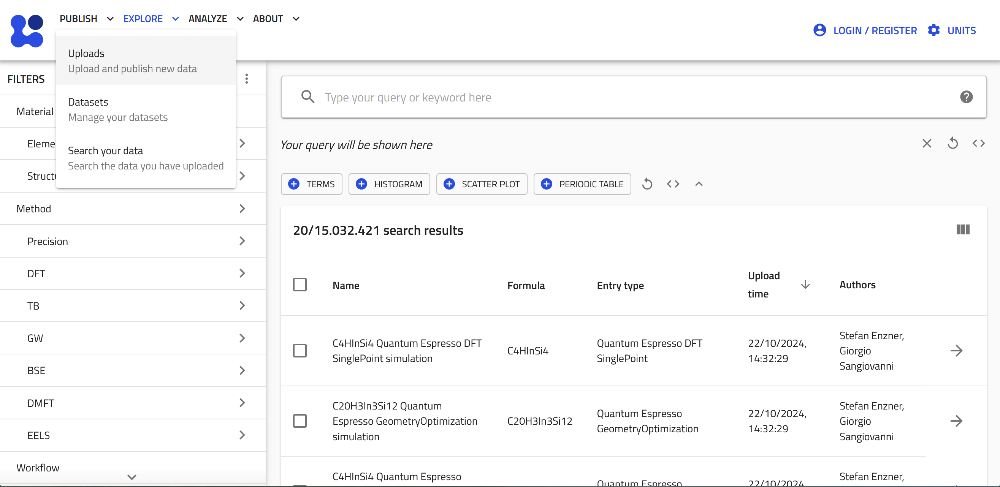
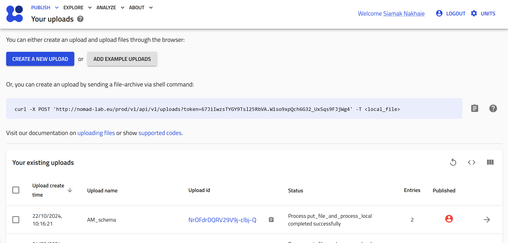
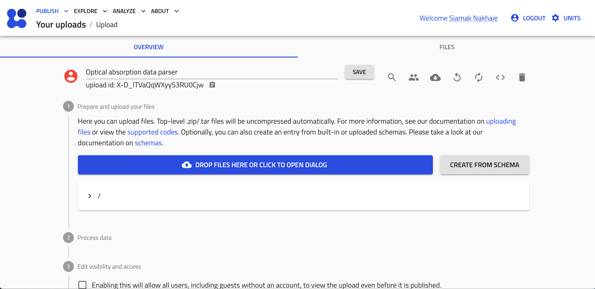
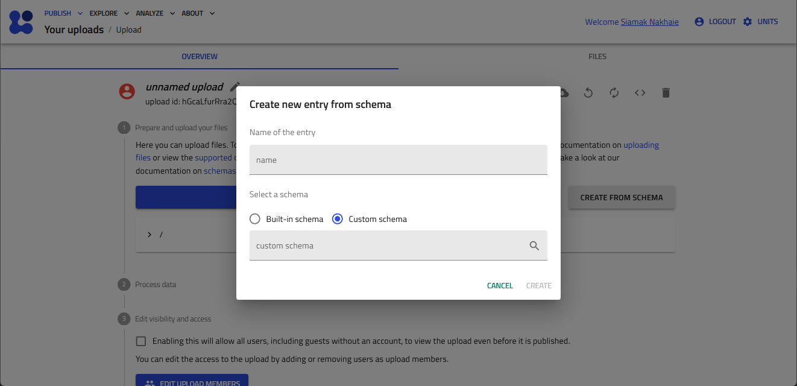
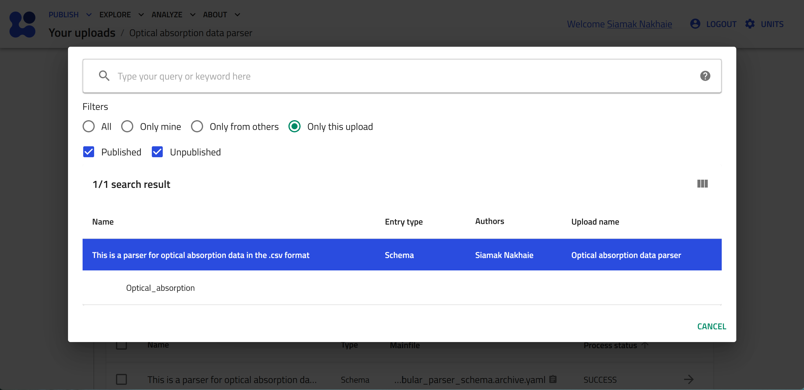
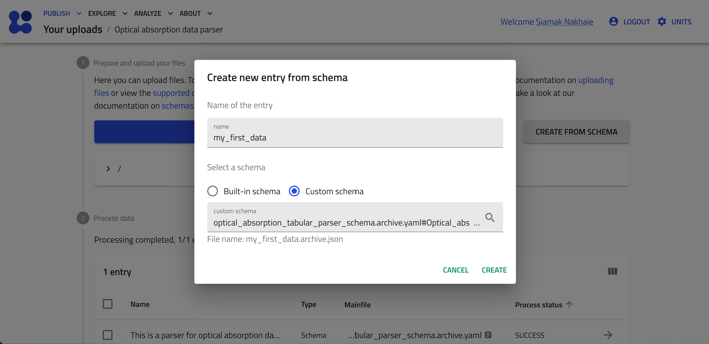
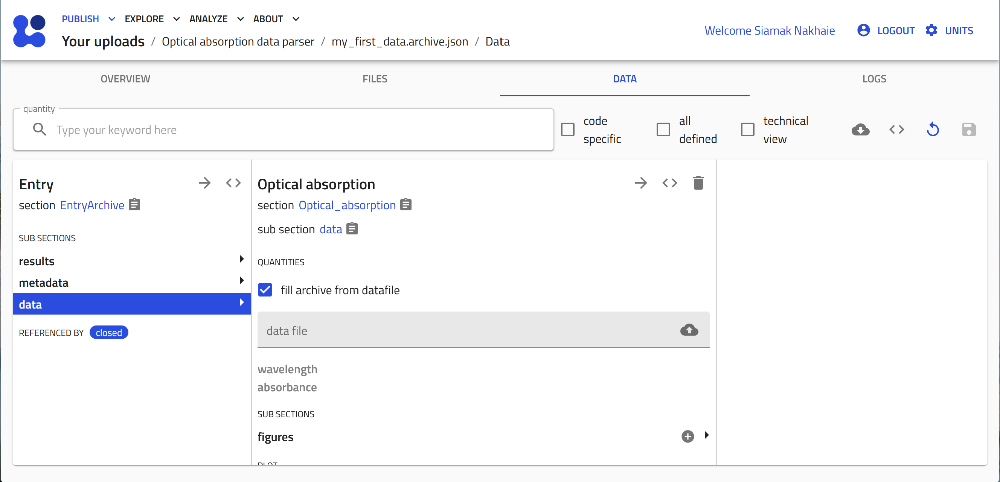

Adding Characterization Data Files to Your NOMAD ELN¶
In this section, we will explore the process of documenting experiments within the NOMAD ELN, focusing on the essential step of uploading characterization results along with sample and processing information.
Within NOMAD, any file type can be added seamlessly through the ELN upload feature. However, to take full advantage of NOMAD's capabilities, it is critical that data files become Entries. These Entries are processed by NOMAD, transforming them into structured data that allows for metadata extraction, visualization, and analysis.
Objective¶
Our objective is to upload these files into our ELN, make NOMAD parse the data within these files, and then visualize the data in plots that can be viewed in NOMAD.
File Handling in NOMAD¶
In NOMAD, uploaded files are categorized into two main types: raw files and processed data files. This distinction is critical to understanding how NOMAD handles and interprets your data.
To facilitate this process, NOMAD is continually expanding its support for various data formats. This support ensures that NOMAD users have access to parsers designed to read specific data formats seamlessly.
What is a parser in NOMAD?
Think of it as a specialized tool in the NOMAD toolkit. Parsers are small programs designed to take a file as input and produce processed data. They play a crucial role in transforming information from various source formats into NOMAD's structured, schema-based format. Each parser is tailored to a specific file format and is designed to handle data files of that format. In addition, the parsers are able to navigate through multiple files, such as those referenced in the main file, to ensure comprehensive data processing.
Supported Data Categories¶
NOMAD supports two main categories of data: Theory and Computations data and Measurement (spectroscopy) data.
Theory and Computations Data: For a comprehensive list of codes and related file formats supported in NOMAD, please visit this page.
Measurement (Spectroscopy) Data:
- For generic tabular data in '.csv' and '.xlsx' formats, NOMAD offers a flexible tabular parser that adapts to the structure of the data within the file.
- For Optical Absorption Spectroscopy, NOMAD supports '.asc' files from PerkinElmer Lambda instruments.
-
For X-ray Diffraction, NOMAD supports the following file formats:
-
'.xrdml' files from Panalytical instruments.
-
'.rasx' files from Rigaku instruments.
-
'.brml' files from Bruker instruments.
-
Using NOMAD's Tabular Parser¶
In the following sections, we'll explore how to utilize NOMAD's tabular parser effectively to enhance your data documentation and visualization.
It is very common to export measurement data into a tabular format such as .csv or .xlsx.
NOMAD offers a versatile tabular parser that can be configured to process tabular data with different representations, such as data arranged in columns or rows.
-
Columns: each column contains an array of cells that we want to parse into one quantity. Example: current and voltage arrays to be plotted as x and y.
-
Rows: each row contains a set of cells that we want to parse into a section, i.e., a set of quantities. Example: an inventory tabular data file (for substrates, precursors, or more) where each column represents a property and each row corresponds to one unit stored in the inventory.
More details on the different representations of tabular data can be found here.
Steps to Upload and Visualize Data¶
In this workshop, we will work with measurement data from optical absorption spectroscopy and conductivity measurement stored in a the tabular format '.csv', with the columns representations shown in the figure below.

Our objective is to upload these files into our ELN, make NOMAD parse the data within these files, and then visualize the data in plots that can be viewed in NOMAD.
To achieve this, we will write a schema using the YAML language, and then illustrate how it can be used as ELN in NOMAD.
Step 1: Defining and Saving the Schema File¶
Let's start by creating a new schema file with the .archive.yaml format, and create a section called Optical_absorption.
definitions:
name: This is a parser for optical absorption data in the .csv format
sections:
Optical_absorption:
Step 2: Adding the Needed Base Sections¶
The next step is to inherit the base sections to meet our ELN needs.
- To create entries from this schema we will use
nomad.datamodel.data.EntryData - To use the tabular parser we will use
nomad.parsing.tabular.TableData - To enable the plot function we will use
nomad.datamodel.metainfo.plot.PlotSection
Step 3: Defining the Quantities of Our Schema¶
We will define the quantities in our ELN schema. Three quantities are needed:
- A quantity to allow the upload of the data file, and apply the tabular parser to transform the data into NOMAD structure. Let's call this
data_file. - A quantity to store the values of our x-axis coming from the tabular parser. Let's call this
wavelength. - A quantity to store the values of our y-axis coming from the tabular parser. Let's call this
absorption.
At this stage our schema file will look like this:
definitions:
name: This is a parser for optical absorption data in the .csv format
sections:
Optical_absorption:
base_sections:
- nomad.datamodel.data.EntryData
- nomad.parsing.tabular.TableData
- nomad.datamodel.metainfo.plot.PlotSection
quantities:
data_file:
type: str
descritpion: Upload your .csv data file
wavelength:
type: np.float64
shape: ['*']
absorbance:
type: np.float64
shape: ['*']
Step 4: Instructing NOMAD on How to Treat Different Quantities¶
For this, we use the m_annotations function within each of the quantities to perform the intended task.
- The
data_filequantity:
We will need three annotations:
- The first is to instruct NOMAD to allow for droping and selecting files in this quantity. Here we will use the following:
- The second is to instruct NOMAD to open the operating system's data browser to select files:
- The third one instructs NOMAD to apply the tabular parser to extract the data from the uploaded file:
tabular_parser:
parsing_options:
comment: '#'
skiprows: [1]
mapping_options:
- mapping_mode: column
file_mode: current_entry
sections:
- '#root'
Those interested in learning more about parsing_options and mapping_options can find additional details in the official NOMAD documentation.
The wavelength quantity:
This quantitiy will accept the values from the first column of our tabular data file, that will be extracted by the tabular parser.
For this purpose we will use the following annotation:
Note that the value for thename key should be exactly written as the header of the first column in the data file.
The absorbance quantity:
This quantitiy will accept the values from the second column of our tabular data file, that will be extracted by the tabular parser. For this purpose we will use the following annotation:
Note that the value for thename key should be exactly written as the header of the second column of the data file.
Our schema file at this stage will look as follows:
definitions:
name: This is a parser for optical absorption data in the .csv format
sections:
Optical_absorption:
base_sections:
- nomad.datamodel.data.EntryData
- nomad.parsing.tabular.TableData
- nomad.datamodel.metainfo.plot.PlotSection
quantities:
data_file:
type: str
descritpion:
Upload your .csv data file
m_annotations:
eln:
component: FileEditQuantity
browser:
adaptor: RawFileAdaptor
tabular_parser:
parsing_options:
comment: '#'
skiprows: [1]
mapping_options:
- mapping_mode: column
file_mode: current_entry
sections:
- '#root'
wavelength:
type: np.float64
shape: ['*']
m_annotations:
tabular:
name: Wavelength
absorbance:
type: np.float64
shape: ['*']
m_annotations:
tabular:
name: Absorbance
Step 5: Creating a Plot for Your Data¶
To visualize the data from the uploaded and parsed file within your ELN, we will use an annotation for the main section of our schema Optical_absorption
By using the plotly_graph_object annotation we instruct NOMAD which quantities to use for the x-axis and the y-axis, as well as provide the title of the plot. Within the plotly_graph_object annotation, the data key defines the quantites for each axis. Here, these varaiable names match those which are defined in the schema.
Finally, plot's title is set using the layout key.
At this stage the schema file will be written as follows:
definitions:
name: This is a parser for optical absorption data in the .csv format
sections:
Optical_absorption:
base_sections:
- nomad.datamodel.data.EntryData
- nomad.parsing.tabular.TableData
- nomad.datamodel.metainfo.plot.PlotSection
quantities:
data_file:
type: str
descritpion:
Upload your .csv data file
m_annotations:
eln:
component: FileEditQuantity
browser:
adaptor: RawFileAdaptor
tabular_parser:
parsing_options:
comment: '#'
skiprows: [1]
mapping_options:
- mapping_mode: column
file_mode: current_entry
sections:
- '#root'
wavelength:
type: np.float64
shape: ['*']
m_annotations:
tabular:
name: Wavelength
absorbance:
type: np.float64
shape: ['*']
m_annotations:
tabular:
name: Absorbance
m_annotations:
plotly_graph_object:
data:
x: "#wavelength"
y: "#absorbance"
layout:
title: Optical Spectrum
Step 6: Uploading the Schema File to NOMAD and Creating an Entry¶
Now that we have created the ELN schema file for parsing the optical absorption data file, let's put it into the test in the NOMAD GUI. Follow this sequence to complete the process:
-
Navigate to NOMAD and start NOMAD by clicking on the OPEN NOMAD button.

-
Click "Uploads" under the "PUBLISH" menu.
 -
Click "CREATE A NEW UPLOAD".
 -
Give a name to your upload by clicking on the pen button. Type the desired name then click SAVE. Then click DROP FILES HERE OR CLICK TO OPEN DIALOG and select the schema file (the ".archive.yaml" file you just prepared) or simply drag and dropthe file here.
 -
The file will be uploaded and processed by NOMAD, the process status will appear as SUCSESS. Then, to create an entry and upload the data file, click CREATE FROM SCHEMA.

-
Select the "Custom schema" radiobox, and then click the mangifying glass button to browse the available custom schema.
 -
Click "Only this upload" radiobox. You see now the custom schema you have just uploaded. Click on it and then select its name, "Optical_absorption" to be instantiated.
 -
Add a name to your entry, e.g., my_first_data, and click CREATE.
 -
The entry is now created based on our schema. In the "DATA" tab click on the cloud button to open the system browser and select your data file.
 -
Click save to start the tabular parser. The columns from the data file are now transformed to array values in the quantities that were defined in the schema.
-
You can click on the quantities, i.e., wavelength and absorbance, to view the data

-
The plot will be also visible if you scroll down.